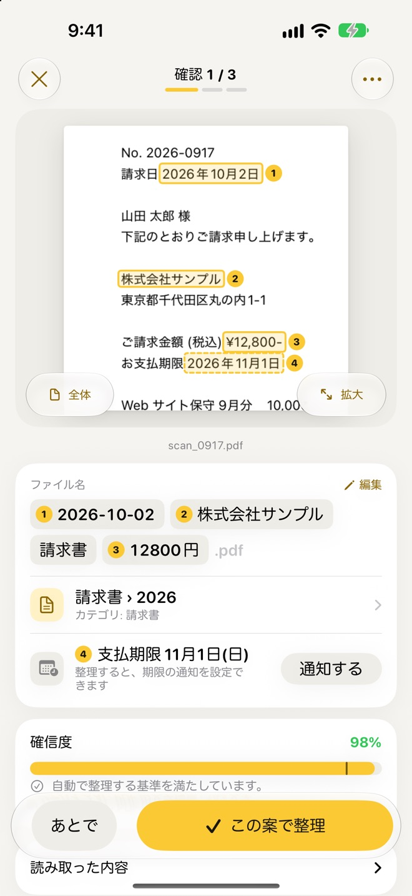
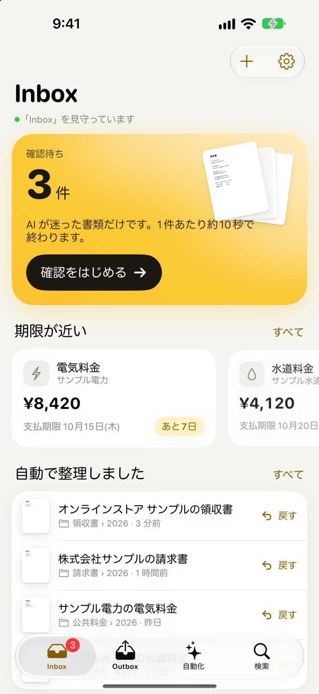
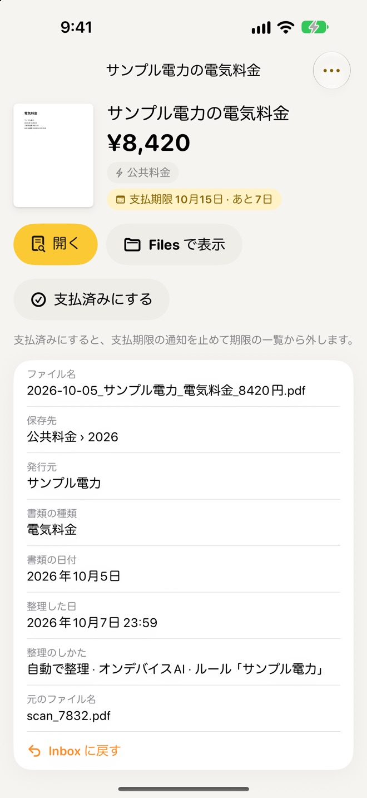
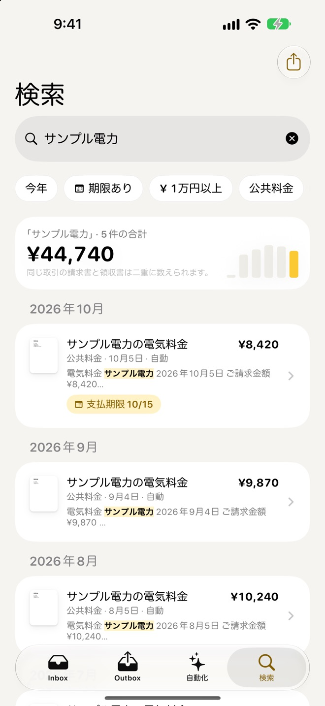
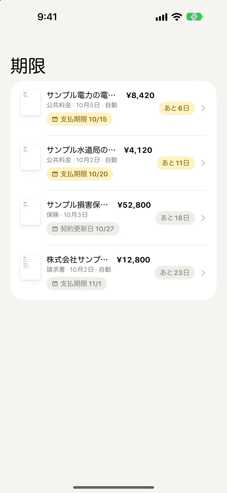
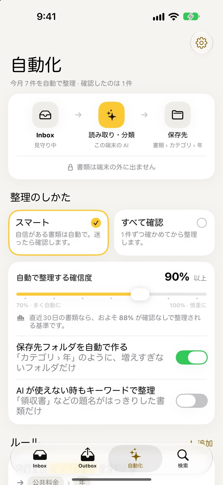
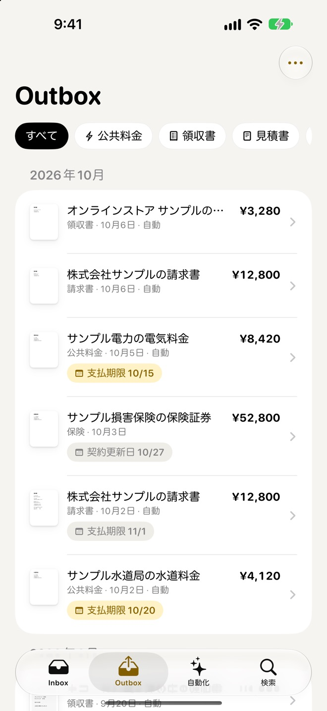

迷った書類は、
根拠を見て確認
確認の画面では、AI が読み取った日付・発行元・金額・期限の場所を、書類の上に番号付きの枠で示します。ファイル名の項目と同じ番号なので、どこを読んだかがひと目でわかります。
- ファイル名や保存先は、その場で直せます
- 迷ったら「あとで」にして、最後に回せます
- 文字が読みにくいスキャンは、高い解像度で読み直せます

ダウンロードフォルダにたまった「scan_0917.pdf」。開くまで中身がわからない請求書や領収書を、端末の中の AI が読み取り、日付と発行元でわかりやすい名前を付けて、いつものフォルダへ整理します。
App Store で見るiPhone・iPad（iOS 26 以上）／アカウント登録は不要です

書類の種類・発行元・日付・金額を読み取り、ファイル名と保存先のフォルダを決めて移します。
自信がある書類は確認なしで整理。迷った書類だけ、読み取った場所を見ながら確かめます。
文字の読み取りも分類も、端末の中で行います。書類をサーバーへ送ることはありません。
アプリ専用の保管庫は使いません。書類は、あなたが選んだフォルダに置かれたままです。
「ファイル」で保存する、ほかのアプリの共有ボタンから送る、アプリの「+」から選ぶ。フォルダごとの取り込みもできます。
スキャンや写真も文字を読み取り、2026-10-02_株式会社サンプル_請求書_12800円.pdf のような名前を付けます。
「請求書 › 2026」のように、増えすぎないフォルダを自動で作って移します。間違えたら、いつでも元に戻せます。
請求書・領収書・明細・契約書・保証書。フリーランスの経費の書類から、家の書類まで。
確認の画面では、AI が読み取った日付・発行元・金額・期限の場所を、書類の上に番号付きの枠で示します。ファイル名の項目と同じ番号なので、どこを読んだかがひと目でわかります。

日付・発行元・書類の種類・金額で名前を付けるので、Files で並べても見分けがつきます。名前の付け方と保存先のフォルダの決め方は、自分好みに変えられます。

発行元・本文・金額・日付から探せます。見つかった書類の合計金額と、月ごとの推移も表示します。

支払期限・契約更新日・有効期限・保証期限を読み取り、近づいたら通知でお知らせします。払い終えた請求書は「支払済み」にすると、通知が止まります。

整理のしかたは、自信がある書類だけ自動で整理する「スマート」と、1件ずつ確かめる「すべて確認」から選べます。自動で整理する確信度の基準も調整できます。

Outbox には、整理した書類が書類の日付の月ごとに並びます。カテゴリで絞り込めて、間違えて整理した書類はスワイプで Inbox に戻せます。

文字の読み取りと分類は、端末に組み込まれたオンデバイス AI で行います（使えない端末では、端末の中のキーワードで分類します）。書類を開発者や外部のサーバーへ送ることはありません。アカウント登録は不要で、解析や広告の仕組みも入っていません。
確認しての整理は、件数の上限なく使えます。確認なしの自動整理まで任せたくなったら、買い切りの PRO 版へ。
お支払いなしで使える範囲
買い切り（1回のお支払い）
購入した PRO 版は、同じ Apple アカウントのほかの端末でも「購入を復元」で使えます。
AI の読み取りは、書類の書き方やスキャンの状態によって間違えることがあります。大切な書類は、確認の画面で読み取った内容を確かめてから整理してください。AiFolio は書類を整理するためのアプリで、会計や税務の判断をするものではありません。